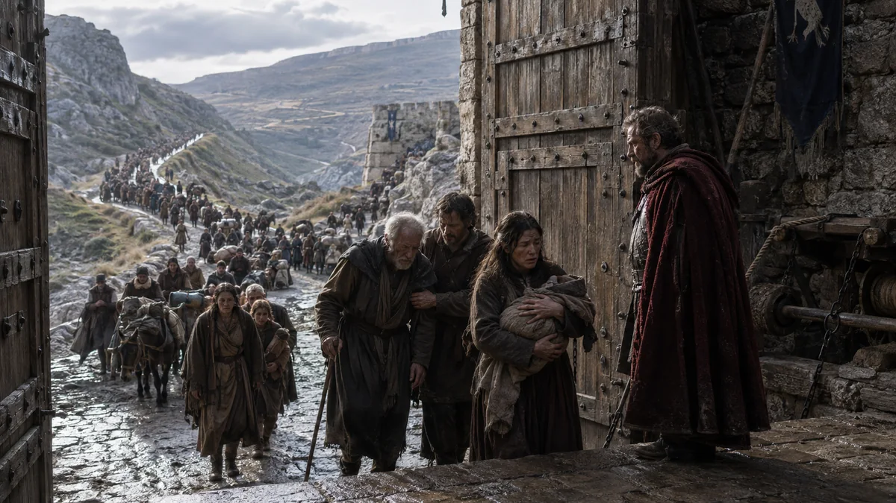
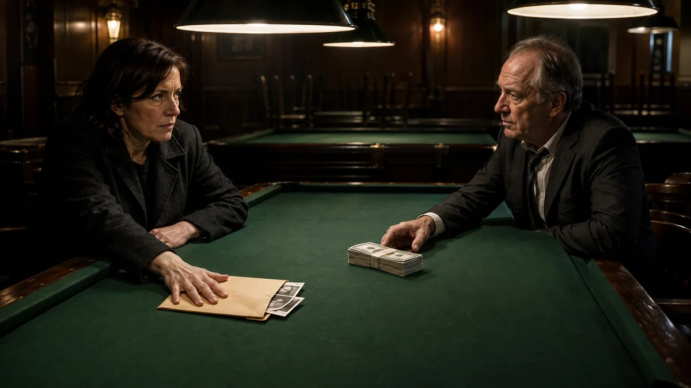

为创作者而写的独立 Agent Skills
把故事，拍成看得懂的镜头。
从一个念头到一场戏，从人物与空间到观众的观看顺序。把创作判断写成能继续制作、能实际检查的方案。
写剧本、定资产、编分镜、交提示词，或进入真实视频制作。已有决定直接接续，要哪一步，就交付哪一步。
一场戏，从可见的选择开始

历史已接受的单幅作品；它展示一种观看关系，保留原来的接受范围。
- 常规模块
- 18项
- 实验模块
- 3项
- 独立源码包
- 21个
- 中英设计指南
- 42份
01 / 技能与完整工作流程
从已有材料，
进入下一步。
点子、小说、剧本、参考图或已选镜头，都有相应入口。每一步留下明确的交接物，下一步继承已有决定。
- 01剧本人物 · 行动 · 因果 · 对白交付：可读故事与场景
- 02导演表演 · 情绪 · 信息揭示交付：导演判断与方案
- 03视觉与资产风格 · 人物 · 场景 · 道具交付：设计与资产合同
- 04分镜与摄影画框 · 调度 · 运镜 · 切点交付：具体镜头方案
- 05生成提示词编译 · 连续性 · 保全交付：可复制的母稿
- 06制作与看片生成 · 剪辑 · 声音 · 修复交付：可播放的实际媒体
已有导演方案就直接编分镜；已有锁定镜头就继承动作与摄影。创意思路先作为备选，采用后再进入主方案。需要白模或实际生成时，再进入对应制作阶段。
02 / 功能、实现目的与实际作品
让每个创作决定，
有具体的落点。
以下为已有原创静帧，点击可看完整原图。作品的历史接受记录与当前源码的行为验证分别保留。


视觉路线包括赛博朋克、史诗、奇幻、恐怖、黑色、爱情、战争、武侠，以及实验硬科幻、实验古风和外部仙侠。外部仙侠仅作为工作流入口，未计入本仓库 21 个分发模块。作品来源与接受范围
CAMERA NOTES / 镜头怎样成为画面
先选择观看关系，
再选择摄影机制。
同一故事、同一动作、同一时长，可以形成不同的观看方案。比较真正可见的画面关系，再决定哪种拍法服务这一场戏。
阅读观看方案设计画框里，先看见什么？
比较起点、转折与终点：人物多大，关系是否同时可见，哪块信息被遮挡，何时显露。差异落实在画面与信息顺序中。
让摄影机有理由移动。
选择能支持当前方案的机制，写清画内触发、路径、朝向、焦点接力、速度与收稳。包内 FCML 提供 115 个可检索机制作为设计素材。
让人物、光与动作处在同一现场。
检查真实光路、白平衡与材质呈色；打戏保留攻防应答、持物、接触和双方反作用，空间检查同时容纳人物、道具与摄影机。
写进提示词，也要保住设计。
保存关键决定与摄影阶段，再从最终文本反向重建画框、路径和终态。文字保全与实际图像、连续视频的执行分别检验。
RESEARCH / 原图与过程一起公开
同一个故事，
看三种拍法。
历史七题材研究把悬疑、恐怖、爱情、打戏、枪战、赛车与超能力动作，分别交给 5.6.5、A 5.7.1 与 B 5.7.1-jev。故事人物、场景、对白与结尾相同。
21 张首轮分镜图仍有逐图待修记录；静图的观看效果与视频运镜分别验证。这批保留原测试标签，未改贴为 5.8.3 成果。


PREVIS / 历史可播放证据
先看空间与接触，
是否真的成立。
按需预演让摄影机与基础走位可以播放检查。下面两条原始历史片段展示有限预演和单动作门；不是最终 AI 成片，也未作为新版本媒体验收。
TOOLBOX / 按任务选入口
一套流程，
每个模块也能单独使用。
GET STARTED / 使用当前源码
先选一个 Skill，
完成你眼前的任务。
技能提供创作方法与交付合同。宿主、生成工具、账号和额度由实际使用环境提供；安装后的加载与任务表现分别检查。
查看目录，再安装分镜导演
npx --yes skills@latest add 62656456/ai-film-skills --list
npx --yes skills@latest add 62656456/ai-film-skills \
--skill ai-storyboard-director \
--agent codex \
--copy \
--yes此入口读取当前仓库源码。需要核对具体版本时，可检出仓库后使用自带安装器；完整安装说明保留源码、实验包与历史归档的区别。
第一次调用，可以这样写
使用 $ai-storyboard-director，为下面 30 秒故事设计可读分镜。
保留已确认剧情、人物、台词与结尾。逐镜写清时间、画面、摄影、台词和声音。本次先交分镜；创意拍法单独说明作用与取舍，采用后再并入。
［粘贴故事与已有约束］
需要提示词时，再明确编译已定分镜。实际生图、视频或白模预演分别发起。
03 / 版本更新与回退
新方法合入，
原有决定继续保留。
当前源码、历史分发与真实媒体验收各自记录。页面中的旧静图、研究分镜和白模，保持原版本与原状态。
分镜导演5.8.32026-10-14 · 当前源码
以 5.7.7 为基础，合入镜头库与观看方案设计。
加入 5.8.2 的包内 FCML 镜头机制、画框与尺度方案比较、关键设计保存。保留 5.7.7 的摄影节奏、真实光路与呈色、打戏应答和持物、空间共同占位、参考图交接与既有创作格式。
导演 Agent 同步三处交接与编译规则：场景信息保全、同剧情画框方案比较、最终文本反向复核。回退继续使用合并前的冻结版本。
本轮是源码合并与规则检查；新版本连续视频的执行效果和用户审美接受仍需实际任务验证。FCML 的机制条目也保留各自媒体未测边界。
FROZEN DOWNLOAD
v1.4.0 / A 5.7.2
历史冻结 Release：21 个单包与 18 项常规包套装，清单和校验和保留。归档字节不随当前源码改变；下载此版得到的是旧分发版本。
查看历史 v1.4.0 下载HISTORY & RESEARCH
旧版本继续可查。
5.6.5、A 5.7.1 与 B 5.7.1-jev 保留同题研究；B 的 Jev 只核对明确文本。v1.3.0 保留 5.4.4 快照，旧导演案例仍标为 SELF-AUDIT ONLY。